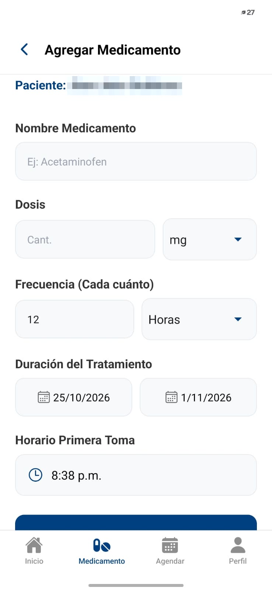
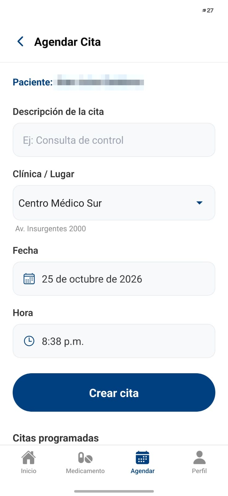
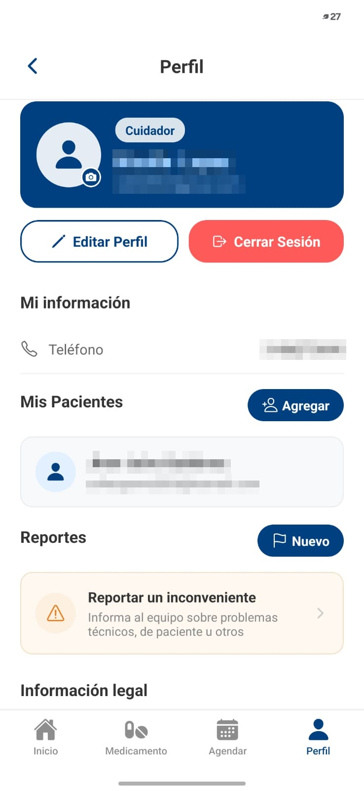

Deja de preguntarte si ya se tomó la pastilla
TuSalud+ organiza los medicamentos y las citas médicas de tu familiar, le avisa a la hora exacta y te deja ver si cumplió. Desde tu celular, estés donde estés.
Buscamos cuidadores que quieran probarla antes de su lanzamiento y ayudarnos a mejorarla.
Participar es gratis. Sin tarjeta de crédito y sin compromiso. Por ahora, solo para celulares Android.
Cuidar a alguien es un trabajo de tiempo completo que casi nadie reconoce como tal.
Si cuidas a tu mamá, a tu papá o a un familiar mayor, conoces la escena: son las ocho de la noche, estás en el trabajo o en el bus, y no sabes si se tomó el medicamento de la tarde. Llamas. No contesta. Vuelves a llamar.
TuSalud+ nació para eso. Tú registras los medicamentos y las citas desde tu celular; la app le avisa a tu familiar a la hora exacta, él confirma con un botón, y tú lo ves en tiempo real. Sin llamadas de control, sin discusiones, sin culpa.
Cómo funciona
Crea tu cuenta de cuidador
Eliges «Soy Cuidador» al registrarte. Toma dos minutos y solo necesitas tu correo y tu teléfono.
Vincula a tu familiar
Tu familiar se registra como paciente y la app le genera un código de cuatro caracteres. Él te lo dicta, tú lo escribes, y quedan conectados. Una sola vez.
Registra sus medicamentos
Buscas el medicamento por nombre, indicas la dosis, cada cuántas horas y por cuántos días. TuSalud+ calcula todas las tomas y programa las alarmas automáticamente.
Así se ve en tu celular
Registras una vez, y TuSalud+ se encarga del resto.

Tu inicio
Las tomas del día y, con Premium, dónde está tu familiar y un botón para llamarlo.

Registrar un tratamiento
Dosis, cada cuántas horas y por cuánto tiempo, en una sola pantalla.

Agendar citas
Clínica, fecha y hora. La app les avisa a los dos.

Tus pacientes
Desde tu perfil agregas a tu familiar con su código.
Qué puedes hacer como cuidador
Todo lo que TuSalud+ hace por ti y por tu familiar.
Registrar tratamientos completos
No alarmas sueltas: indicas medicamento, dosis, frecuencia y duración. Si son tres pastillas diarias durante quince días, quedan las cuarenta y cinco alarmas programadas en un solo paso.
Saber si cumplió, sin preguntar
Cada toma queda marcada como cumplida, pospuesta u omitida. Abres la app y ves el calendario de la semana: qué tomó, qué no, y a qué hora.
Agendar sus citas médicas
Registras la cita con la clínica, la fecha y la hora. La app le avisa a tu familiar el día de la cita, y a ti también.
Corregir sobre la marcha
¿El médico cambió la hora del medicamento? La ajustas desde tu celular y la alarma se actualiza en el suyo. No tienes que ir hasta allá ni explicarle nada por teléfono.
Un aviso si la dosis se ve rara
Si escribes una cantidad fuera de lo común, TuSalud+ te pide confirmarla antes de guardar. Evita el error de tecleo que termina en una dosis equivocada.
Ver dónde está Premium
Si tu familiar salió y quieres confirmar que llegó bien, puedes ver su ubicación en el mapa. Solo tú, solo mientras esté vinculado contigo y solo si él lo autoriza. Función exclusiva del Plan Premium.
¿Por qué no basta con la alarma del celular?
Porque la alarma suena y se apaga, y nadie se entera de si sirvió. TuSalud+ registra qué pasó con cada toma, avisa a dos personas en vez de una, y organiza el tratamiento completo en lugar de obligarte a programar cada hora a mano.
Sé parte de la prueba piloto
Antes de lanzar TuSalud+ queremos que la usen cuidadores reales, con sus familiares reales, y nos digan qué funciona y qué hay que mejorar.
Te inscribes
Llenas el formulario de esta página. Toma un minuto.
Te acompañamos
Te contactamos en menos de 24 horas hábiles y te ayudamos a instalar la app y a vincular a tu familiar.
La usas y nos cuentas
La usas en tu día a día y al final nos cuentas tu experiencia en una encuesta o entrevista corta.
Lo que ganas al participar
- Acceso anticipado y gratis. Usas TuSalud+ antes de su lanzamiento, sin pagar nada.
- Tranquilidad desde el primer día. Empiezas a saber si tu familiar cumplió, sin llamar a cada rato.
- Acompañamiento del equipo. Te ayudamos con la instalación y resolvemos tus dudas directamente.
- Para celulares Android. Por ahora, la prueba piloto funciona solo en Android.
- Tu voz en el producto. Lo que nos cuentes se convierte en mejoras antes de que la app llegue a más familias.
Lo que te garantizamos
- Las alarmas suenan aunque no haya internet. Quedan guardadas en el celular de tu familiar.
- Tus datos no se venden ni se comparten. No los usamos para publicidad. Cumplimos la Ley 1581 de 2012.
- Te puedes retirar cuando quieras. La vinculación se rompe desde cualquiera de los dos lados y los datos se eliminan a solicitud.
Inscríbete en la prueba piloto
Déjanos tus datos y te escribimos en menos de 24 horas hábiles para contarte los siguientes pasos. Sin compromiso y sin costo.
¿Solo tienes una pregunta? Escríbela en el último campo y te respondemos.

¡Ya estás inscrito!
Gracias por querer ser parte de TuSalud+. Te escribiremos a tu correo o WhatsApp en menos de 24 horas hábiles con los siguientes pasos.
Preguntas frecuentes
¿Tiene algún costo participar en la prueba piloto?
No. Participar es completamente gratis y no te pedimos datos de tarjeta.
¿Qué tengo que hacer si participo?
Nuestro equipo te ayuda a instalar la app. Tú la usas con tu familiar en el día a día y, al final, nos cuentas tu experiencia en una encuesta o entrevista corta.
¿Funciona en iPhone?
Por ahora la prueba piloto es solo para celulares Android, tanto el tuyo como el de tu familiar.
¿Mi familiar tiene que saber usar el celular?
Solo tiene que saber desbloquearlo y tocar un botón. Cuando suena la alarma aparece un aviso grande con tres botones de colores: «Ya lo tomé», «Posponer» o «No lo tomé». Nada más.
¿Y si mi familiar no quiere que lo controlen?
La vinculación la autoriza él, compartiendo su código. Puede romperla cuando quiera. TuSalud+ no se instala a escondidas ni funciona sin que él lo sepa.
¿Pueden varios familiares acompañar al mismo paciente?
Sí. Con el Plan Gratuito, cada paciente puede vincular a un cuidador. Con el Plan Premium, hasta tres cuidadores al mismo tiempo: por ejemplo, tú y tus hermanos.
¿Funciona sin internet?
Las alarmas ya programadas suenan sin conexión. Para registrar tratamientos nuevos o ver si cumplió sí se necesita internet.
¿Me puedo retirar de la prueba?
Sí, cuando quieras y sin dar explicaciones. Si lo pides, eliminamos tus datos y los de tu familiar.
¿Cuánto cuesta el Plan Premium?
Las funciones esenciales son gratuitas y seguirán siéndolo. El Plan Premium cuesta $20.000 COP al mes o $200.000 COP al año (IVA incluido) y agrega la ubicación en tiempo real, hasta tres cuidadores, el historial de 24 meses exportable y soporte prioritario. Tienes 5 días hábiles de retracto y 7 días de garantía de satisfacción. Más detalles en Servicios.
Recupera tu tranquilidad
Inscríbete en la prueba piloto y sé de los primeros cuidadores en usar TuSalud+.